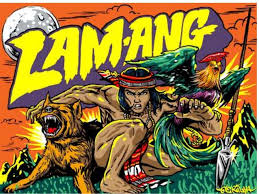
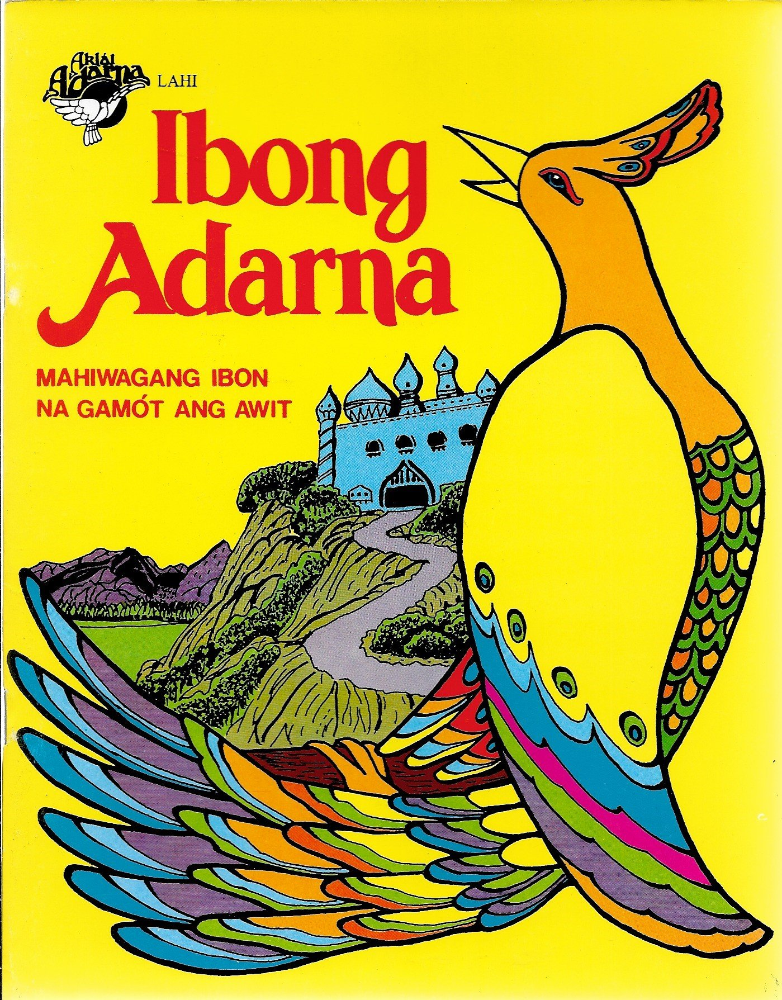

Philippine epic poetry is the body of epic poetry in Philippine literature. Filipino epic poetry is considered to be the highest point of development for Philippine folk literature, encompassing narratives that recount the adventures of tribal heroes. These epics are transmitted through oral tradition using a select group of singers and chanters. A study revealed that the Philippine folk epics, like those found elsewhere in Asia, are often about a quest for a wife as well as the various ordeals linked to the founding of a family, hamlet, tribe or a kingdom. The narratives would include voyages - on earth, sea, sky, and the underworld - to allow the hero or heroine to overcome the challenges faced. After the ordeal, the protagonists - through an increase or improvement of his or her qualities, becomes the ideal man or woman.
E. Arsenio Manuel defines heroic narratives in verse as "folk epics" or "ethnographics" and describes common characteristics to them:
Philippine folk epics are essentially the adventures of the hero and can be classified into two groups: epics of romance, in which the main adventures consist in the hero's courting of specific women, or in search of beautiful ladies he can marry; and epics in which the hero undertakes adventures mainly in the service of his family, his country, his people, and for others. Epics which prove the hero's valor and worth as a man also belong to the second group. These two groups are not mutually exclusive, and epics that are predominantly romantic also contain adventures of the other kind and vice-versa
Primary examples of epics in the first group are Lam-Ang, the Ulalim, Labaw Donggon, Bantugan, Lumalindaw, and Kudaman. Some of these epics, however, are not exclusively of the first group. For example, Lam-Ang's first adventure was his quest for his father who had gone to fight the Igorots and never came back.
In the second group of epics, examples include the Agyu cycle of epics, The Maiden of the Buhong Sky, Tulalang, the Hudhud hi Aliguyon, the three Subanon epics, Ibalon, Tuwaang Attends a Wedding, Maharadia Lawana, and Tudbulul.

Biag Ni Lam-Ang Comic
Supernatural Powers Lastly, one of their most distinctive characteristics are their possession of supernatural powers, or magic animals and/or objects. The Ifugao hero, Aliguyon, is a notable exception to this rule, being the only one with no extraordinary power beyond his natural prowess. The range of the hero's supernatural prowess ranges from the mild to the extraordinary. Except for their endurance, the heroes in the Ifugao hudhud are down-to-earth and benign in comparison to other heroes. In contrast, heroes in Central and South Philippine epics cannot continue on without mana, or some supernatural being aiding them, or without the magical properties of the tools that they use.

Ibong Adarna
Philippine folk epics sometimes extend to the realm of heavenly regions and the underworld. In Labaw Donggon, the hero courts his wives across three worlds. Similarly, the Gaddang hero Lumalindaw seeks his fourth wife, Caligayan, in the Underworld, in a place called Nadaguingan, guarded by dwarfs. In Tuwaang Attends a Wedding, Tuwaang descends to the Underworld during his fight with the Young Man of Sakadna. In the Tale of Sandayo, Bolak Sonday searches for Sandayo in the Underworld when he dies. When Bolak Sonday dies, Mendepesa is sento to look for her soul